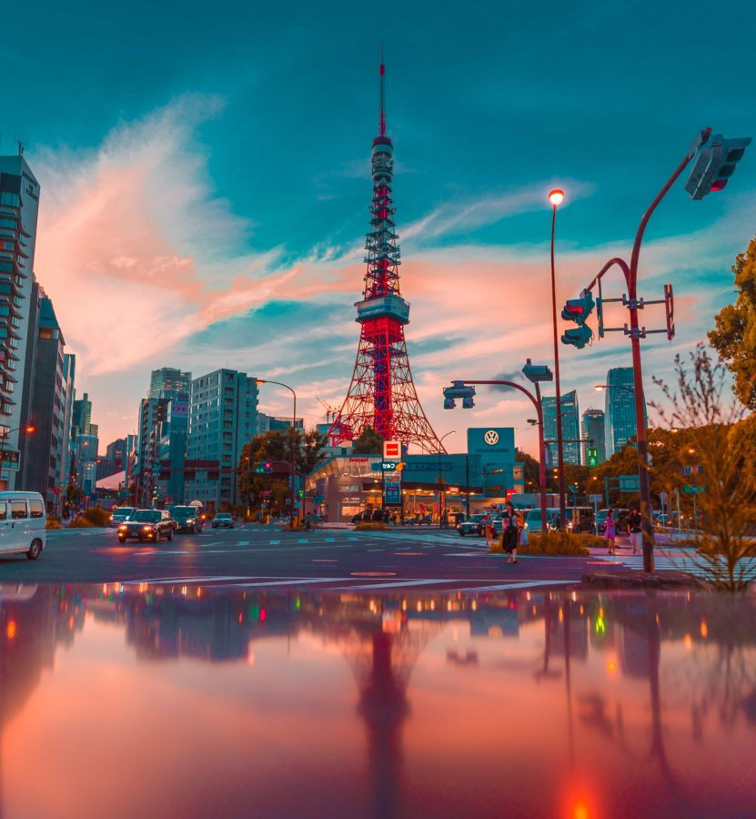
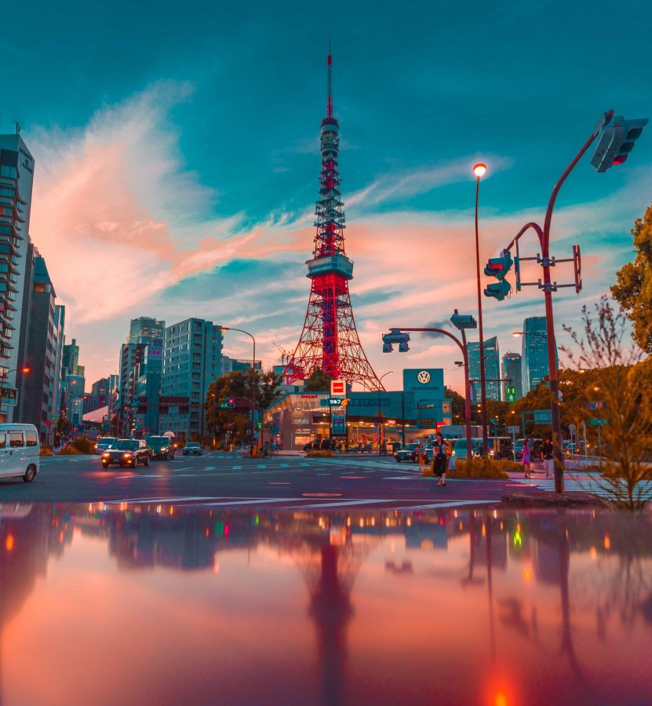

Map
So lets start, first of all lets see where Japan is in the map.

As you can see the map of japan it's in the eastern region of the world and also called as "Land of the Rising Sun"
Capital
The capital of Japan is Tokyo and its the biggest metropolitan in the world.
Here are some pictures of tokyo city....
Tokyo city

 

Food
Every country has its own food that people like now as a foreigner you may not like some type of food but you may love some food its really depends on your taste.Some of Japan's most popular foods are Sushi, Ramen, Unagi, Tempura and many more....


Work Culture
Japan's work culture is known for its hard work. Note if you are going to Japan you better be ready for work hard. But working hard comes with it's complications like stress, depression, anxiety etc... and Japan is facing all of these problem right now.
Health

Everyone knowns that japan is one of the healthiest countries with the higest life expectancy in the world 80+.Japan has one rule that you need to do your full body health checkup every year, and they eat healthy and they do walk a lot. We can say that the ovral life style of Japan is healthy.